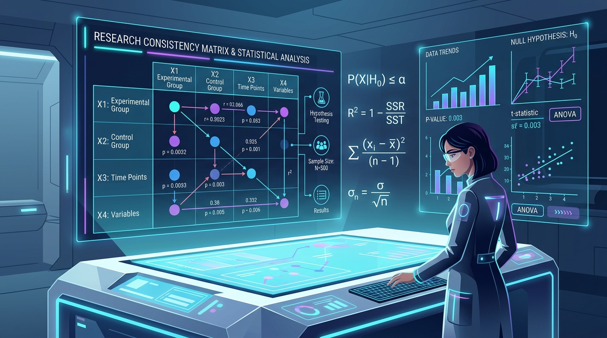
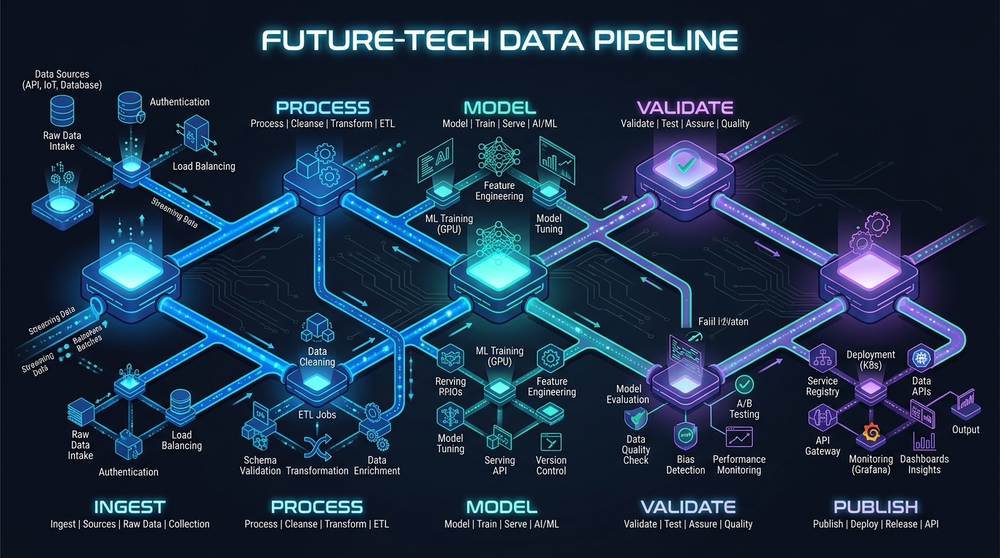

Domina la Metodología Científica Paso a Paso
Una plataforma interactiva estructurada en 5 niveles progresivos (desde tu primera hipótesis hasta la publicación indexada en Scopus/WoS), fundamentada en Mario Bunge, Karl Popper, Hernández-Sampieri, Fred Kerlinger y John Creswell, construida con arquitectura modular en Python & Flask.
¿Qué Problema Resuelve InvestigaLab?
Cerrando la brecha entre la teoría metodológica abstracta y la ejecución empírica rigurosa en la educación superior y científica.
Metodología Intimidante y Desarticulada
La metodología se suele enseñar mediante manuales densos sin guías prácticas. Los estudiantes quedan desorientados al formular hipótesis, delimitar problemas o seleccionar pruebas estadísticas adecuadas.
- Incongruencia entre objetivos, preguntas e hipótesis.
- Confusión entre pruebas paramétricas y no paramétricas.
- Dificultad para redactar en formato IMRyD y responder a revisores.
Ruta Pedagógica Guiada & Herramientas Vivas
InvestigaLab ofrece una escalera de 5 niveles con fundamentos de autores clásicos, fórmulas matemáticas, generador de matrices de congruencia en tiempo real y arquitectura de software al estilo Archify.
- 5 niveles progresivos con cuestionarios de autoevaluación.
- Generador de Matriz de Consistencia Metodológica en vivo.
- Pipeline de software desacoplado y documentado con Archify.
El Currículo Científico en 5 Fases
Una progresión sistemática desde la curiosidad empírica inicial hasta la publicación en revistas de alto impacto (Scopus/WoS Q1-Q4).
Fundamentos Epistemológicos & Problema
Falsacionismo de Karl Popper, las 15 características de la ciencia de Mario Bunge y formulación de preguntas no dicotómicas.
Marco Teórico, Objetivos e Hipótesis
Ecuaciones booleanas en Scopus/PubMed, estado del arte en embudo, objetivos SMART e hipótesis $H_0 / H_1$ según Sampieri.
Diseño, Muestreo y Operacionalización
Principio MAXMINCON de Kerlinger, fórmulas matemáticas de muestreo ($Z, e, p$) y matrices de variables (escalas nominal, ordinal, intervalo, razón).
Psicometría y Estadística Inferencial
Alfa de Cronbach ($\alpha$), V de Aiken ($V$), pruebas de normalidad (Shapiro-Wilk) y contraste de hipótesis (t-Student, ANOVA, $d$ de Cohen).
Publicación IMRyD, Bioética y Peer Review
Estructura IMRyD, comités de bioética (Belmont/Helsinki), directrices éticas de IA (COPE), cuartiles Q1-Q4 y cartas de réplica (*Rebuttal*).
Obras Canónicas de Referencia
Autores y libros en los que se sustenta la estructura metodológica de la plataforma.
Metodología de la Investigación
R. Hernández-Sampieri & C. Mendoza (McGraw-Hill)
Las rutas cuantitativa, cualitativa y mixta, formulación de hipótesis y operacionalización.
La Ciencia: Su Método y su Filosofía
Mario Bunge (Siglo XXI)
Ciencias formales vs fácticas, leyes científicas y las 15 características de la ciencia.
La Lógica de la Investigación Científica
Karl R. Popper (Tecnos)
El problema de la inducción y el principio de falsabilidad como criterio de demarcación.
Investigación del Comportamiento
Fred N. Kerlinger & Howard B. Lee (McGraw-Hill)
Principio MAXMINCON, varianza experimental, psicometría y validez de constructo.
Research Design
John W. Creswell & J. David Creswell (SAGE)
Modelos mixtos convergentes y secuenciales, reporte de tamaño del efecto y ética.
La Estructura de las Revoluciones Científicas
Thomas S. Kuhn (FCE)
Paradigmas científicos, ciencia normal, anomalías y rupturas epistemológicas.
Generador de Matriz de Consistencia Científica
Valida la alineación lógica entre tu problema, objetivo, hipótesis y variables en tiempo real.

Formulación de Parámetros
Matriz de Consistencia Viva
Auto-sincronizadaVD: Variable 2
Arquitectura del Proyecto (Estilo Archify)
Flujo de procesamiento técnico desacoplado siguiendo las directrices de Archify Engine.

Pipeline de Ejecución Flask + Capa Científica
Desacoplamiento total entre la infraestructura de Python y el dominio científico.
HTTP Request / Dispatcher
run.py -> app/__init__.pyEl servidor WSGI recibe la petición HTTP del cliente y la delega a la factoría de la aplicación Flask.
Controller & Business Logic
app/routes.pyEl controlador invoca los proveedores de datos pedagógicos y procesa la lógica de filtrado de niveles.
Data Repository Layer
app/data/levels_data.py & books_data.pySuministra el currículo científico y catálogo de libros canónicos sin acoplarse al framework web.
¿Cómo Ejecutar el Proyecto en tu Computadora?
Sigue estos sencillos pasos en tu terminal para correr la aplicación Flask localmente.